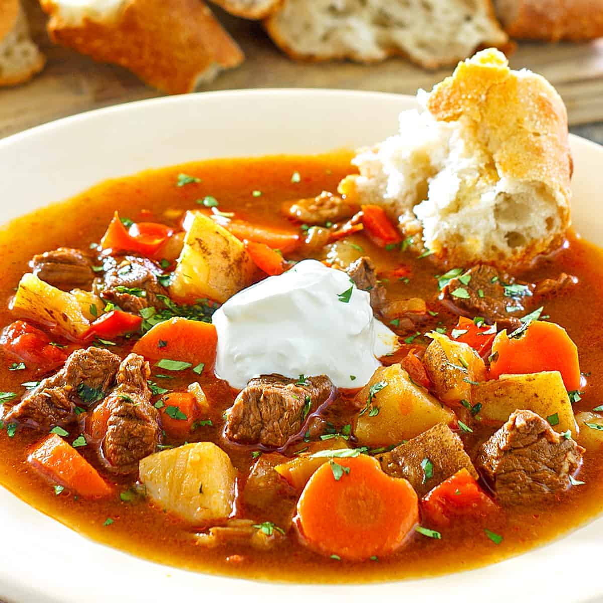

Goulash Recipe

Description
You'll find a
detailed ingredient list
and step-by-step instructions
in the recipe below
Ingredients
- Beef
- Onion and Oil
- Tomato
- Sauces and Seasoning
- Lasagna Noodles
- Macaroni
Steps
- Cook the onion in oil,
then add the ground beef and cook until brown.
Add garlic.
- Stir in the water, tomatoes, and seasonings.
Bring to a simmer.
- Stir in uncooked noodles, cover,
and simmer until pasta is tender./li>